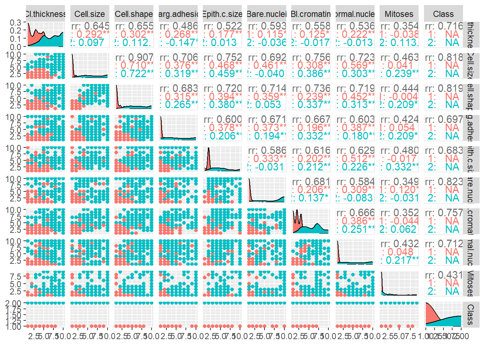
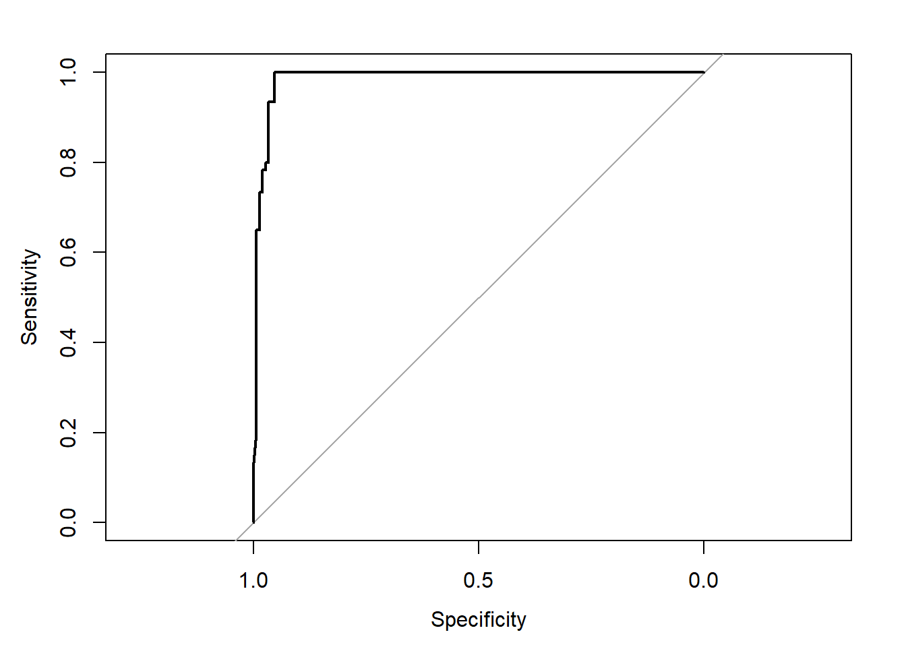

Id Cl.thickness Cell.size Cell.shape Marg.adhesion
0 0 0 0 0
Epith.c.size Bare.nuclei Bl.cromatin Normal.nucleoli Mitoses
0 16 0 0 0
Class
0 Welcome to the third instalment in our series of posts designed to introduce statistical and machine learning models. Having explored Linear Models (LM) and Decision Trees in our previous posts, we are now moving on to Random Forests.
In this tutorial, we will apply a Random Forest model to the Breast Cancer Wisconsin (Diagnostic) dataset. The aim is to predict whether a breast mass is malignant or benign based on measurements from cell nuclei. Let’s get started with a brief description of each attribute:
Id: Each instance’s unique identifier.
Cl.thickness: Clump thickness describes the overall thickness of the clumps. When breast cells are healthy, they group together (or “clump”) in a specific way. As cancer starts to develop, the structure starts to break down and the cells form thicker, irregular clumps.
Cell.size: Uniformity of cell size is a measure of how similar the cells are in size. In healthy tissues, the cells tend to be of similar size. If there’s a lot of variation in cell size, it’s an indication that something may be wrong.
Cell.shape: Uniformity of cell shape is a measure of how similarly shaped the cells are. Healthy cells have a uniform shape, while cells from malignant tumours can vary more in shape.
Marg.adhesion: Marginal adhesion refers to how the cells stick to each other and to the tissue in which they’re located. In healthy tissues, cells have a certain level of adhesion that helps them stay together. In cancerous tissues, the cells often lose this adhesion, allowing them to invade other tissues.
Epith.c.size: Epithelial cell size measures the size of the cells in the epithelial tissue. Epithelial tissues line the outside of organs and structures in the body. They also line the inside of hollow organs, glands, and cavities. Variations in cell size can indicate cancerous changes.
Bare.nuclei: The bare nuclei variable refers to nuclei that are not surrounded by cytoplasm (the material within a living cell, excluding the nucleus). The presence of bare nuclei can be a sign of a malignant growth.
Bl.cromatin: Bland chromatin describes the uniform “texture” of the nuclei in the cells when viewed under a microscope. Cancerous cells often have a more varied, “coarser” texture.
Normal.nucleoli: Nucleoli are small structures seen in the nucleus. Typically, healthy cells contain only one or two nucleoli. An increased number or a larger size of nucleoli can be a sign of cancer cells.
Mitoses: Mitoses is the process by which a cell divides into two daughter cells. The rate of mitosis in a cell population can indicate how quickly the cells are dividing and growing. A high mitosis rate may suggest a malignant growth.
Class: The diagnosis of breast tissues (2 for benign, 4 for malignant).
Exploratory Data Analysis (EDA)
The first step in any data analysis project is to understand the dataset. Let’s load the dataset and examine the structure:
This dataset includes several numerical attributes related to cell nuclei. Additionally, we have the categorical target variable Class, with two levels: ‘benign’ and ‘malignant’.
Checking for Missing Values and input problems
Next, we’ll check for missing values. In R, we use the is.na() function. To check for input problems we’ll use a boxplot
Those 16 NA values come from Bare.nuclei, so we have few NA observations and those happen to have all the other variables properly filled. Knowing random forest can handle NA, that must not be a problem. Another thing that called my attention here was Mitoses, most is equal to 1, so maybe it’s a variable strongly related by the type of tumor, meaning that anything greater than 1 represents a malignant tumor, that’s my hypothesis, we’re going to check that out.
Relationship with the Target Variable
ggpairs(BreastCancer[,-1] %>% dplyr::mutate_all(as.numeric), mapping = ggplot2::aes(colour = as.factor(Class)), progress = FALSE)
Here we see that for all the variables, bigger values are associated with malignant tumor, which confirms my hypothesis about mitosis behavior. Take into account that I converted all variables to numeric in order to have a better looking graph (try to replicate the function without converting to numeric and see what I am talking about). I did that because I know the numbers are monotonically related, in other words, I know that cell.size 1 is smaller than cell.size 2 and their difference is as big as cell size 5 versus cell size 4 for example. I say that because when a column is a factor but it’s filled with numbers, the relation between the numbers can be unexpected, for example the effects of drugs dosage. For certain medications, increasing the dose will increase the effect up to a certain point. However, beyond that point, increasing the dose may lead to harmful side effects without increasing the intended effect of the drug.
Checking for Multicollinearity
Next, we need to check for multicollinearity, which is when predictor variables are highly correlated with each other. This can be a problem because it undermines the statistical significance of an independent variable. We use the vif() function from the ‘car’ package to check for this.
# Compute variance inflation factors (VIF)
vif(lm(Class ~ ., data = BreastCancer[, -1]%>% dplyr::mutate_all(as.numeric))) Cl.thickness Cell.size Cell.shape Marg.adhesion Epith.c.size
1.905223 7.194043 6.549892 2.466854 2.550007
Bare.nuclei Bl.cromatin Normal.nucleoli Mitoses
2.595167 2.876814 2.430306 1.400595 A VIF value above 5 is usually considered high and indicative of multicollinearity. Cell shape and size show high VIF, they are correlated and we could benefit from excluding one of them. I would do that by keeping the one which is stronger on the model result, here as we have a small dataset and our goal is to get familiarized with random forest, I am not going to do that.
Building Our Random Forest Model
Now that we’ve got a thorough understanding of our data, let’s move forward and build our Random Forest model. In this step, we will use the randomForest package in R.
# Set seed for reproducibility
set.seed(123)
# Split the data into training and test sets
training_rows <- sample(1:nrow(BreastCancer), 0.7*nrow(BreastCancer))
training_set <- BreastCancer[training_rows, -1]
test_set <- BreastCancer[-training_rows,-1 ]
# Train the model
rf_model <- cforest(Class ~ ., data = training_set, controls=cforest_unbiased(ntree=5, mtry=3))
# Print the model
rf_model
Random Forest using Conditional Inference Trees
Number of trees: 5
Response: Class
Inputs: Cl.thickness, Cell.size, Cell.shape, Marg.adhesion, Epith.c.size, Bare.nuclei, Bl.cromatin, Normal.nucleoli, Mitoses
Number of observations: 489 The randomForest() function builds the Random Forest model, with the formula Class ~ . telling it to use all other variables to predict Class. The ntree argument is the number of trees to grow in the forest - in this case, 10. The importance argument, when set to TRUE, computes a measure of variable importance.
Now, let’s evaluate our model’s performance on the test data.
# Make predictions on the test data
predictions <- predict(rf_model, newdata = test_set)
# Print confusion matrix
table(observed = test_set$Class, predicted = predictions) predicted
observed benign malignant
benign 143 7
malignant 0 60The confusion matrix gives us a detailed breakdown of the model’s performance. The diagonal elements represent the number of points for which the predicted label is equal to the true label, while off-diagonal elements are those that are mislabelled by the classifier.
In addition to a confusion matrix, there are several other metrics and methods that can provide a more detailed understanding of a model’s performance. These include:
- ROC Curve and AUC: Receiver Operating Characteristic (ROC) curve is a plot that illustrates the diagnostic ability of a binary classifier as its discrimination threshold is varied. Area Under the Curve (AUC) provides an aggregate measure of performance across all possible classification thresholds. An AUC of 1 indicates a perfect classifier.
pred_prob <- predict(rf_model, newdata = test_set, type = "prob")
pred_prob <- sapply(pred_prob, `[[`, 2)
roc_obj <- roc(test_set$Class, pred_prob)Setting levels: control = benign, case = malignantSetting direction: controls < casescat("AUC: ", auc(roc_obj), "\n")AUC: 0.9866667 plot(roc_obj)
- Cross-validation: This technique provides a better assessment of the model’s expected performance on unseen data by reducing the variance associated with a single train-test split.
Carregando pacotes exigidos: lattice# Define training control
train_control <- trainControl(method = "cv", number = 10)
# Train the model using cross-validation
rf_model2 <- train(Class ~ ., data = BreastCancer[,-1] %>% na.omit(), trControl = train_control, method = "rf")
# Print the model
print(rf_model2)Random Forest
683 samples
9 predictor
2 classes: 'benign', 'malignant'
No pre-processing
Resampling: Cross-Validated (10 fold)
Summary of sample sizes: 615, 615, 614, 614, 615, 615, ...
Resampling results across tuning parameters:
mtry Accuracy Kappa
2 0.9647679 0.9232216
41 0.9633186 0.9200402
80 0.9574576 0.9065592
Accuracy was used to select the optimal model using the largest value.
The final value used for the model was mtry = 2.Lastly, we can inspect the importance of each feature in making predictions.
# Get variable importance
varimp(rf_model) Cl.thickness Cell.size Cell.shape Marg.adhesion Epith.c.size
0.000000000 0.054748603 0.005586592 0.000000000 0.011173184
Bare.nuclei Bl.cromatin Normal.nucleoli Mitoses
0.026815642 0.079329609 0.016759777 0.000000000 Each row of the output corresponds to one of the predictor variables. The higher the value, the more important the predictor variable in classifying the tumour as benign or malignant.
Variable importance gives us insight into which features are most influential in predicting the target variable in our Random Forest model. It’s an important tool for understanding and interpreting the model. So cell size and shape are the strongest variables for prediction.
And there we have it - a complete Random Forest model in R, built on the Breast Cancer Wisconsin (Diagnostic) dataset. In this tutorial, we’ve covered a lot of ground, from the initial exploratory data analysis through to the creation and evaluation of our model. We hope you’ve found it helpful and enlightening!
In our upcoming posts, we’ll dive into more sophisticated machine learning algorithms and their applications. Stay tuned!